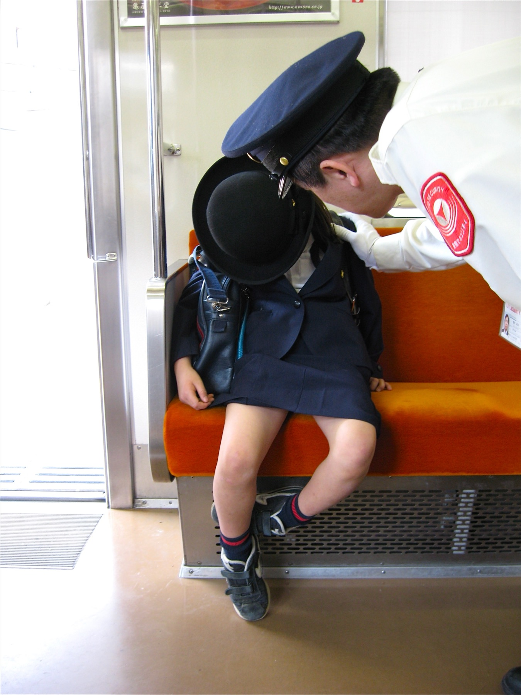

Japan with
Japan with
At about eight in the morning, Japanese streets produce a scene that can stop overseas visitors mid-step: children with square randoseru backpacks moving toward school without a parent beside them. In a city station, the surprise becomes sharper. A child too short to see over the ticket gate may be following a transfer through a crowd of office workers.
The easy explanation is that Japan is simply safe, or that Japanese parents value independence more. Both are too neat. Crime, traffic collisions, bullying, heat and missed trains exist here. Parents worry. Schools impose rules. What makes the scene possible is not a national personality trait but a designed journey—repeated until it becomes ordinary.
Those figures correct two impressions at once. Walking is widespread, but “alone” is not the dominant arrangement. Many children travel with siblings, friends or a neighborhood group. The striking solo child is real; the usual landscape is more varied.
First, the neighborhood school changes the distance
Most public elementary pupils attend a school assigned by their municipality. In compact urban districts, that can put the school within a short walk. Japan’s Ministry of Foreign Affairs children’s site describes a typical Tokyo walk as roughly five to fifteen minutes, while acknowledging that rural journeys can be much longer and may require buses.
That geography matters. “Going to school alone” can mean following the same few streets every weekday—not navigating an open-ended city. Schools may specify the route, meeting point and time. Some areas organize shūdan tōkō, group commuting, in which nearby pupils gather and older children help lead the line.
Families often walk the route together before the first term, practice crossings and establish rules for delays, strangers or emergencies. A yellow hat, reflective backpack cover or personal alarm does not remove danger, but makes a young commuter more visible and prepared.
The “alone” child is passing through an adult system
The central surprise appears halfway into the journey: independence here is produced collectively. Adults have not vanished; many have moved to the edges. A guardian checks departure time. A school receives the child. Volunteers stand at crossings. Shopkeepers and neighbors recognize the daily flow. Police and municipalities inspect routes and teach road safety.
Tokyo’s Metropolitan Police reported that, by the end of 2024, more than 8,600 traffic-safety volunteers were active across 242 elementary-school districts in the jurisdictions of 71 police stations. They warn drivers and guide children at crossings. This is one city’s program, not a national total, but it makes the invisible network measurable.
Then why is a child riding the train alone?
The train scene belongs to a related but different system. Most local public elementary pupils walk. Young rail commuters are especially visible in large cities because private and national schools can draw children from far beyond one neighborhood. Web Japan notes that many private elementary and middle-school pupils ride crowded buses and trains alongside adult commuters.
A train trip demands more than courage. The child must remember a platform, direction, transfer, station name and backup plan. Families typically rehearse the route and may accompany a beginner before reducing support. School commuter passes formalize the repeated journey; railways issue them against school certification. Station staff, signs, announcements and predictable timetables form another layer of assistance.

But do not turn this into a claim that every six-year-old in Japan rides alone. Distance, maturity, disability, family preference, school policy and route complexity all matter. Some parents accompany children; some schools use buses; some public pupils travel by car in rural areas. A crowded platform can also be physically intimidating for a small child.
What can go wrong?
Japan’s 2026 spring traffic-safety campaign explicitly prioritizes school routes because serious collisions involving children still occur. The 2023 commuting survey found that parents worried about strangers and traffic crashes, while heatstroke became a concern outside the regular commute. Severe heat, snow, typhoons and local incidents can trigger escorts, altered routes or school closure.
Group travel has trade-offs too. A fixed meeting time can burden families, older pupils may carry responsibility, and groups can reproduce social tension. Train travel can expose children to crowding, harassment, service disruption and the fear of being separated from companions. Personal alarms, phones or tracking devices may help, but no device substitutes for judgment and a practiced plan.
Japan’s model is therefore not “children are safe because everyone is trustworthy.” It is closer to risk budgeting: make the route familiar, limit the decisions a child must make, distribute oversight and increase responsibility gradually. Even then, families disagree about what is appropriate.
How to watch this everyday ritual respectfully
If you visit Japan during the morning commute, notice the infrastructure rather than treating children as a spectacle: painted school-zone markings, car restrictions, volunteers in bright vests, groups that split at corners, ticket gates and the way older pupils guide younger ones. Do not follow, interview or photograph identifiable children without permission. Schools are working spaces, not tourist attractions.
You can learn tsūgaku and tsūgakuro with free Japanese Training Lab practice, with no signup required. To observe ordinary public streets without intruding on a school, join Yuji’s TikTok LIVE walks. DraMap, created by Yuji, lets iPhone users learn Japanese while playing.
Reporting sources
- City Planning Institute of Japan: nationwide survey of elementary-school commuting — 6,000 municipal-school families; 2023 travel patterns, published 2024.
- Ministry of Foreign Affairs, Web Japan: Ways to School — school districts, walking groups, crossings and private-school train travel.
- MEXT: Tell Me About Japanese Elementary School — walking alone or in designated groups.
- Tokyo Metropolitan Police: school-route traffic-safety volunteer teams.
- Tokyo Metropolitan Government: 2026 Spring Traffic Safety Campaign.
- Yurikamome: school commuter pass requirements.
Sources and changing safety information were checked November 3, 2026. Practices vary by municipality, school type, age, route and family. Interpretation and story selection are Japan Unfolded’s editorial judgment.

Watch the systems behind everyday Japan.
Yuji edits Japan Unfolded and created DraMap. Walk real streets on TikTok LIVE, then learn Japanese while playing on iPhone.
Japan Unfolded is independently edited by Yuji Shimizu, creator of DraMap. The app link is publisher promotion; editorial claims are sourced above.